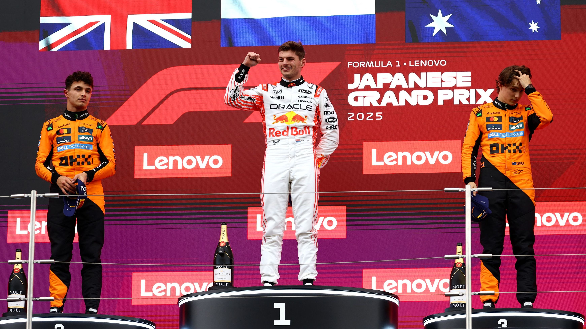
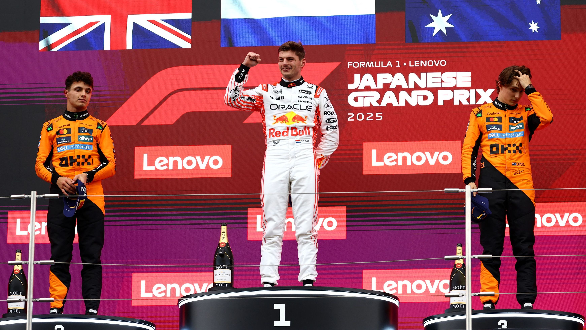
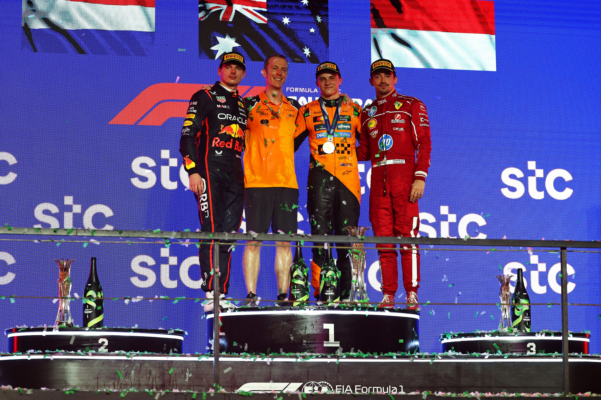
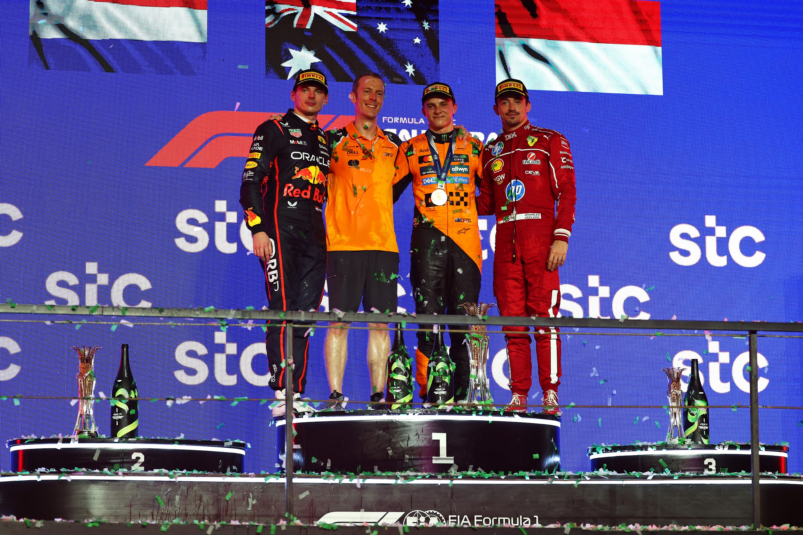

Trás la temporada de 2024
Verstappen se corona campeón Mundial de 2024. El final del mundial fue ajustado hasta la el GP de Brasil donde el piloto remonta desde la posición 17 hasta el puesto más alto del podio. Finalmente se corona campeón en el GP de las Vegas y empiezan los rumores de que en 2025 podrán plantarle cara otras escuderías.

 

 
